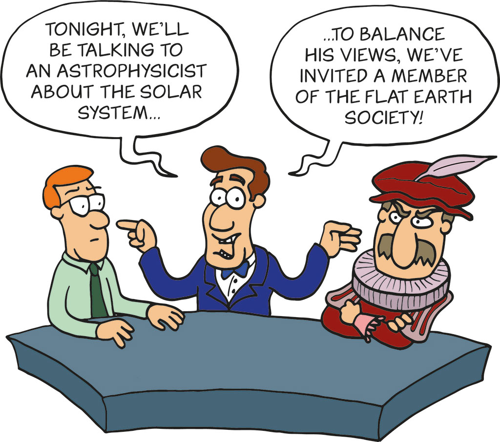

Reporting from 2019, business as usual
Your coverage was so predictable:
• someone was seen in McDonalds
• upon confiscating 80 tonnes of equipment someone used a diesel generator
• someone was using something wrapped in plastic (everything is plastic these days)
• someone was late to work or pickup kids from school
• someone blocked public transport (understand your frustration)
• Police spend money policing (it is their decision, not ours)
• We actualy won the court case against the Police, the Police decision was unlawful0
Sorry, not sorry, about the disruption
We are sorry that we are portrayed in some mainstream media as annoying.
The reality is - our actions are the wake up call, disrupting "business as usual".
Non violent direct Action (NVDA) is the most efficient (scientifically proven) tactic to disrupt and put the pressure on the government.
Some notable examples from the history:
• https://en.wikipedia.org/wiki/Emmeline_Pankhurst
Pankhurst, her daughters, and other WSPU activists received repeated prison sentences, where they staged hunger strikes to secure better conditions, and were often force-fed.
• https://en.wikipedia.org/wiki/Mahatma_Gandhi
• https://en.wikipedia.org/wiki/Rosa_Parks
The stakes are much higher now, no longer about a certain group of people, it is about the collapse of society and survival of civilisation.
Three demands
Extinction Rebellion has three demands. Seven words, essence, simplicity:
• TELL THE TRUTH
• ACT NOW
• BEYOND POLITICS
We invite conversation based on these three premises.
We do not care if you like us or not, it's totally beyond the point.
Climate emergency will not be solved by ignoring or arresting bunch of activists: doctors, teachers, olympians, priests, rabbis, members of the European Parliament among many others.
Systematic Issues
• Fossil fuels industry has a long history of sponsoring climate change denial1
• "The Great Hack"2 tells the story of fake news and unprecedented Facebook data misuse.
• Oxford Dictionaries declared "post-truth" as word of the year3
• Amygdala that evolved over thousands of years and fear response to negative news.
• Clickbait titles, few seconds attention span, shows like Naked Attraction4.
• Check this Kickstarter project, it's so good: The Truth Has Changed"
Rules
• Doctors have Hippocratic Oath5
• Lawyers in the UK have duty to the court in the administration of justice6.
• Is Journalist's Creed7 a thing in media?
Illustrative example
Illustrative example
Someone will be late to work.
Someone will be stuck in traffic.
Some distruption is necessary to get the attention.
4 years election cycle is not going to work.
This is an emergency and has to be treated as such.
Illustrative example
Other organisations may piggyback on Extinction Rebellion and do not follow the principles.
Extinction Rebellion is strictly non-violent.
Verify the sources.
Verify the information with the headquarters, information hub, a dedicated media liaison.
Illustrative example
Across 50 countries, at least 2 weeks, 100k people someone somewhere will die.
This is pure math and the the law of large numbers.
Do not seek sensationalist headlines.
Recommendation
Talk with a dedicated media liaison.
It is perfectly possible that a "random person" could be an undercover law enforcement officer.
Don't use out of context soundbites.
Recommendation
Subscribe to the announcement channel: t.me/rebellionbroadcast
It's official. It's public.
Recommendation
Change the language.
No more climate change. From now on, it's climate emergency.
Change is good, everything is changing.
Warming is good, I like Summer.
Biodiversity loss and species going extinct? Well… It’s adaptation (lack thereof) and evolution.
I'm genuinely worried about feedback loops and catasthropic failure, check what happened to Venus8:
“It is thought that the early environment of Venus was more like that of Earth with liquid water on the surface. At some point in the evolution of Venus, a runaway greenhouse effect occurred, leading to the current greenhouse-dominated atmosphere. Venus's atmosphere has therefore received a great deal of attention from those studying climate change on Earth.”
It's not an alarmist view.
It's facts, research, data, science.
Rebellion will be Hashtagized
#EverybodyNow
#TheTimeIsNow
#ExtinctionRebellion
LOVE AND RAGE
0. https://www.judiciary.uk/wp-content/uploads/2019/11/Jones-Ors-v-Comm-of-Police-Approved-judgment.pdf ↩
1. https://en.wikipedia.org/wiki/ExxonMobil_climate_change_controversy ↩
2. https://www.youtube.com/watch?v=iX8GxLP1FHo ↩
3. https://www.bbc.co.uk/news/uk-37995600 ↩
4. https://en.wikipedia.org/wiki/Naked_Attraction ↩
5. https://en.wikipedia.org/wiki/Hippocratic_Oath ↩
6. https://www.barstandardsboard.org.uk/using-a-barrister/what-can-i-expect-from-a-barrister/ ↩
7. https://en.wikipedia.org/wiki/Journalist's_Creed ↩
8. https://en.wikipedia.org/wiki/Atmosphere_of_Venus ↩